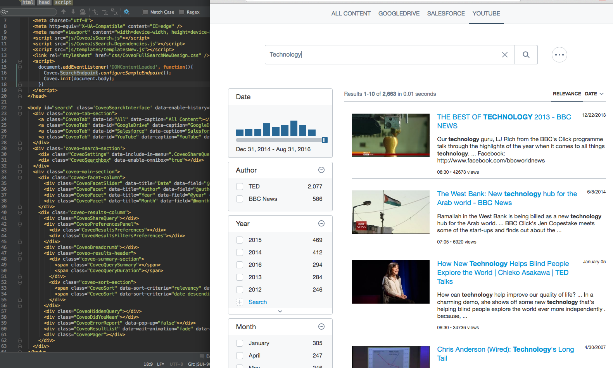

Coveo JavaScript Search Framework - Reference Documentation
Search UI 

Coveo JavaScript Search UI Framework

Installation
You should install the Coveo JavaScript Search UI Framework as an npm package:
npm install --save coveo-search-ui
All resources will be available under node_modules/coveo-search-ui/bin. You can include those in your pages with
<script> tags.
If you are using a module bundler (Browserify, webpack, Babel, etc.), you can use require('coveo-search-ui').
Alternatively, you can download the latest version of the Coveo JavaScript Search UI Framework here.
Basic Usage
<!-- Include the library scripts. -->
<script src="js/CoveoJsSearch.js"></script>
<script src="js/templates/templatesNew.js"></script>
<!-- Each DOM element with a class starting with "Coveo" (uppercase) will instantiate a component. -->
<body id="search" class='CoveoSearchInterface'>
<!-- Each DOM element with a class starting with "coveo-" (lowercase) is strictly for CSS/alignment purpose. -->
<div class='coveo-search-section'>
<!-- Any Coveo component can be removed (or added); none is actually required for the page to "load". -->
<div class="CoveoSearchbox"></div>
</div>
<!-- The "data-" attributes of each component allow you to pass options to this specific component instance. -->
<div class="CoveoFacet" data-title="Author" data-field="@author" data-tab="All"></div>
<div class="CoveoFacet" data-title="Year" data-field="@year" data-tab="All"></div>
<script>
// The following line shows you how you could configure an endpoint against which to perform your search.
// Coveo.SearchEndpoint.configureCloudEndpoint('MyCoveoCloudEnpointName', 'my-authentification-token');
// We provide a sample endpoint with public sources for demo purposes.
Coveo.SearchEndpoint.configureSampleEndpoint();
// Initialize the framework by targeting the root in the interface.
// It does not have to be the document body.
Coveo.init(document.body);
</script>
</body>
You can find more examples of fully configured pages in the ./pages folder.
A tutorial is available to help you get started (see Coveo JavaScript Search UI Framework V1 Getting Started Tutorial).
Build
You should have node 6.9.1 (or later) installed to build this project.
npm install -g gulp
npm install
gulp
Important Gulp Tasks
gulp default: Builds the entire project (CSS, templates, TypeScript, etc.)gulp compile: Builds only the TypeScript code and generates its output in the./binfolder.gulp css: Builds only the Sass code and generates its output in the./binfolder.gulp sprites: Regenerates the sprites image as well as the generated Sass/CSS code.gulp test: Builds and runs the unit tests.gulp doc: Generates the documentation website for the project.gulp dev: Starts a webpack dev server for the project.gulp devTest: Starts a webpack dev server for the unit tests.
Dev Server
Make sure you were able to run gulp entirely without any errors first. Then you can start the dev-server:
gulp dev
This will start a webpack-dev-server instance (see Webpack Dev Server).
You can now load http://localhost:8080/Index.html in a web browser.
Any time you hit Save in a source file, the bundle will be recompiled and the dev page will reload.
If you need to modify the content of the search page (i.e., the markup itself, not the TypeScript code), modify the
Index.html page under ./bin. This page is not committed to the repository, so you do not have to worry about
breaking anything. However, if you feel like you have a good reason to modify the original Index.html, feel free to
do so.
Build a Custom Version of the Library
For advanced users and people concerned with loading speed in their integration, there is a way to compile a completely customized version of the library by including only the components you wish to use.
A classic use case would be to want to display only a search box with a minimal result list, with no facets, tabs, or any other more "advanced" components.
By building a bundle with only those components, you can substantially cut down on the size of the resulting JavaScript code, since any code related to components which you do not use will be removed.
- Install Plop globally with
npm install -g plop(see Plop). - Navigate to the
./plopfolder. - Run
plopto automatically start the small command line utility. - Choose the Create a new bundle option.
- Select the components you wish to include in your bundle.
- Run
node plop.build.jsto compile the file which will be created under./bin/. - Once compilation is done, your new bundle should be available as
./bin/CoveoJsSearch.Custom.js.
I Want to Add a New Component!
- Fork the
coveo/search-ui repository.
- Install Plop globally with
npm install -g plop.
- Navigate to the
./plop folder.
- Run
plop to automatically start the small command line utility.
- Choose the Create a new component option.
- Enter a name for your component. This will automatically generate 4 things :
- Plop will create a new source file under
./src/ui/{{your component name}}/{{your component name}}.ts.
This is where your component logic should be implemented.
- Plop will export your component in
./src/Index.ts. This will make your component globally available under the
Coveo namespace.
- Plop will add your component to
./tsconfig.json. This will allow the project to recognize your component.
- Plop will create a new file under
./test/ui/{{your component name}}Test.ts. This is a blank test file in which
you should add your unit tests.
- Plop will reference your component in
./test/Test.ts. This will build your test like the rest of the
components.
- Now, make it work (your mileage may vary)!
- Add tests for your component.
- You should test the entire public API of your component. This includes all public methods and available options.
- Create a pull request to merge your changes in the master branch.
coveo/search-ui repository.npm install -g plop../plop folder.plop to automatically start the small command line utility.- Plop will create a new source file under
./src/ui/{{your component name}}/{{your component name}}.ts. This is where your component logic should be implemented. - Plop will export your component in
./src/Index.ts. This will make your component globally available under the Coveo namespace. - Plop will add your component to
./tsconfig.json. This will allow the project to recognize your component. - Plop will create a new file under
./test/ui/{{your component name}}Test.ts. This is a blank test file in which you should add your unit tests. - Plop will reference your component in
./test/Test.ts. This will build your test like the rest of the components.
We are very eager to receive external contributions and to collaborate with other developers!
Tests
Tests are written using Jasmine. You can use npm run test to run
the tests in PhantomJS.
If you wish to write new unit tests, you can do so by starting a new webpack-dev-server instance.
To start the server, run gulp devTest.
Load http://localhost:8081/tests/SpecRunner.html.
Every time you hit Save in a source file, the dev server will reload and re-run your tests.
Code coverage will be reported in ./bin/coverage
Documentation
General reference documentation is generated using TypeDoc (see Coveo JavaScript Search UI Framework - Reference Documentation). The generated reference documentation lists and describes all available options and public methods for each component.
Handwritten documentation with more examples is also available (see JavaScript Search Framework V1 Home).
A tutorial is available (see JavaScript Search Framework V1 Getting Started Tutorial). If you are new to the Coveo JavaScript Search UI Framework, you should definitely consult this tutorial, as it contains valuable information.
You can also use Coveo Search to find answers to any specific issues/questions (see search.coveo.com).